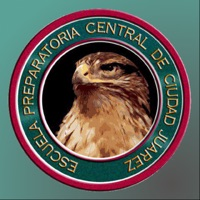
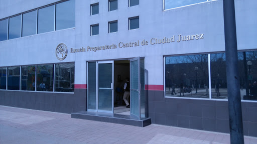

Roman Hernandez Damaris Marioly
Estructura Semántica HTML5
Escuela Preparatoria Central de Ciudad Juarez ¿Quiénes somos? En 2002 comenzamos actividades a iniciativa de un grupo
de personas con reconocimiento social y amplios antecedentes en el campo educativo, agrupadas en
una asociación denominada "Escuela Preparatoria Central de Ciudad Juárez, A.C.", lo anterior con
el propósito de brindar una educación de excelencia a jóvenes estudiantes egresados de secundaria,
con alto rendimiento académico. "Excelencia para alumnos excelentes"
Misión y Visión Ser reconocidos como una preparatoria de excelencia
en sus procesos de formación educativa y Dar acceso a una educación de excelencia destinada a
jóvenes juarenses, sin importar sus recursos económicos. 
Valores - Aprendizaje - Inclusión - Responsabilidad - LOGROS Desde 2015
Primer Lugar
Desde 2016
Convivencias Académicas, Culturales y Cívicas organizadas por la Secretaria de Educación y Deporte del Estado de Chihuahua.
Primeros Lugares en:
Desde 2016
Concursos de la Universidad Autónoma de Ciudad Juárez
Primeros Lugares en: Av. Tecnológico #4445 Col. Partido Iglesias C.P. 32663 Cd. Juárez Chih.
233-03-07 info@epccj.edu.mx Copyright © 2021 por Marioly Roman